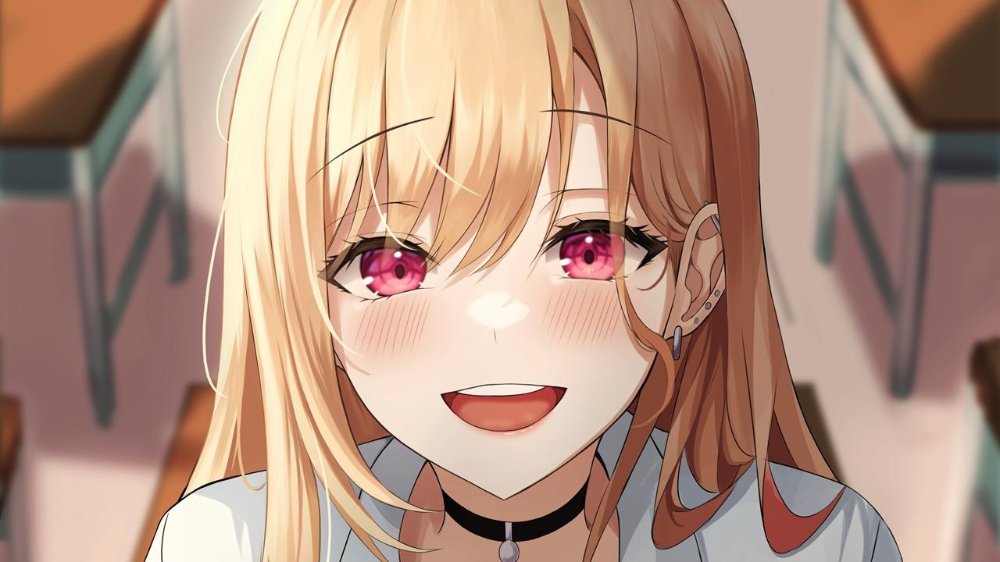

Jakie anime oglądać? Najlepsze anime na zimę - styczeń 2022

Jakie anime oglądać w 2022? Nowy rok przywitał nas całkowicie nowym sezonem anime. Trzeba jednak przyznać, że zobaczymy same perełki. Attack on Titan, Demon Slayer, Arifureta, Takagi-san czy Princess Connect - wszystkie te tytuły dostaną
nowe
odcinki. Polujący na nowości dostaną natomiast pewien interesujący romans i epicką opowieść osadzoną podczas Wojny Dwóch Róż
Kimetsu no Yaiba: Yuukaku-hen (Demon Slayer)
Wiadomości Tech Artykuły Fintech Rozrywka Telefony Forum Zaloguj się Zarejestruj się Home Artykuły Rankingi Jakie anime oglądać? Najlepsze anime na zimę - styczeń 2022 Jakie anime oglądać? Najlepsze anime na zimę - styczeń 2022 02.01.2022
Michał
"Isand" Świech Rankingi Attack on Titan i Kimetsu no yaiba - jakie anime obejrzeć w styczniu 2022 Jakie anime oglądać w 2022? Nowy rok przywitał nas całkowicie nowym sezonem anime. Trzeba jednak przyznać, że zobaczymy same perełki. Attack
on
Titan, Demon Slayer, Arifureta, Takagi-san czy Princess Connect - wszystkie te tytuły dostaną nowe odcinki. Polujący na nowości dostaną natomiast pewien interesujący romans i epicką opowieść osadzoną podczas Wojny Dwóch Róż. Kimetsu no
Yaiba:
Yuukaku-hen (Demon Slayer) Nasza okładkowa propozycja jest dość specyficzna, bo pierwszy odcinek miał miejsce kilka tygodni temu. Kimetsu no Yaiba: Yuukaku-hen jest jednak oficjalnie zaliczany do sezonu zimowego, który to zaczyna się
w
styczniu. Demon Slayer to zdecydowanie nie jest seria, którą trzeba przedstawiać prawdziwemu fanowi anime. Zobaczymy jak Tanjirou, Zenitsu oraz Inosuke ruszą do Yoshiwary. To znana dzielnica rozrywki i... czerwonych latarni. Tam jednak
zmierzą
się z potężnym demonem. Stęskniliście się za Tanjirou i Nezuko? Oni za wami też. Głosu Tanjirou Kamado użyczy Natsuki Hanae (m.in. Kousei Arima z Shigatsu wa Kimi no Uso). Jako jego siostra Nezuko Kamado pojawi się
Akari Kitou (m.in. Tsukasa Yuzaki z Tonikaku Kawaii oraz Suzune Horikita z Classroom of the Elite). Za produkcję anime odpowiada studio Ufotable znane np. z Fate/stay night: Unlimited Blade Works czy dziejącego się wcześniej Fate/Zero.
Attack on Titan: The Final Season
Teraz czas na zakończenie historii, którą fani anime śledzą już prawie dziesięć lat. Attack on Titan znane też jako Shingeki no Kyojin to historia, która zaczęła się za trzema murami: Marią, Rose i Siną. Teraz te same mury odegrają zupełnie
inną rolę. Zobaczymy jak zakończy się historia Erena Yeagera, który przyrzekł zapewnić swojemu narodowi wolność i wybić wszystkich tytanów. Prześledzimy też losy Mikasy Ackermann, Armina Arlerta czy ludzi pochodzących z drugiej strony morza.
Wojna o Eldię się nie skończyła. Pierwszy odcinek będzie miał miejsce 10 stycznia. Za produkcję odpowiada studio Mappa, które ma na koncie takie anime jak Jujutsu Kaisen, Kakegurui oraz Yuri!!! on Ice. Jako Eren Yeager pojawi się Yuuki Kaji
(Shouto Todoroki z Boku no Hero Academia, Melodias z Nanatsu no Taizai oraz Kenma Kozuke z Haikyuu!!). Mikasa Ackermann to natomiast Yui Ishikawa znana z roli Violet Evergarden.
Akcja serii toczy się w postapokaliptycznym świecie, w którym ludzkość została niemal całkowicie wybita przez istoty zwane tytanami. Niewielka część ludzi, która przetrwała, schroniła się na terenie otoczonym trzema 50-metrowymi murami –
Maria, Rose i Sina – będącymi dla tytanów przeszkodą nie do pokonania. Mieszkańcy miast od ponad stu lat nie zostali zaatakowani, lecz ich sytuacja nie jest stabilna, gdyż poza murami wciąż żyją liczni tytani, a każda wyprawa oddziału
Zwiadowców poza mury kończyła się klęską.Jednak pewnego dnia jak spod ziemi wyrasta Kolosalny Tytan mierzący 60 metrów. Wraz z Opancerzonym Tytanem przebija się przez mur Maria i wpuszcza innych tytanów, którzy całkowicie niszczą wszystkie
miasta i pożerają mieszkańców. Ci, którym udało się ewakuować, zamieszkali za murem Rose. Wśród nich jest trójka przyjaciół – Eren, Mikasa i Armin. Eren od dawna marzył o dołączeniu do oddziału Zwiadowców, aby zobaczyć świat zewnętrzny.
Widząc jak tytan pożera jego matkę, chłopiec poprzysięga zemstę i kilka lat później wraz z przyjaciółmi zaciąga się do wojska.
Sono Bisque Doll wa Koi wo Suru
Czuliście kiedyś, że wasze zainteresowania nie spotkałyby się ze zrozumieniem u innych? Dokładnie tak ma Wakana Gojou. Kocha on tradycyjne lalki i chciałby zająć się ich wytwarzaniem. Niestety, społeczeństwo nie rozumie fascynacji tak mało
męskim hobby. Wakana jest więc odludkiem. Marin Kitagawa to jego przeciwieństwo. Towarzyska, popularna, bardzo ładna... Dziewczyny takie jak ona zwykle nie zwracają na niego uwagi. Teraz jest jednak inaczej. Marin przyłapuje Wakanę na szyciu
i chce by jej pomógł z uszyciem czegoś. Czy jego niezwykły talent pomoże mu zdobyć serce Marin? Przekonacie się oglądając Sono Bisque Doll wa Koi wo Suru.
Pierwszy odcinek nowego anime pojawi się 9 stycznia, a za jego produkcję odpowiadać będzie studio CloverWorks. To bardzo znane studio, które ma na koncie tak słynne serie jak Bunny Senpai, Darling in the FranXX, Horimiya, Shadows House,
Yakusoku no Neverland czy ekranizację Fate/Grand Order: Babylonia. W rolach głównych pojawi się jednak dwoje nowicjuszy: Hina Suguta i Shouya Ishige.
Wakana Gojo jest licealistą praktykującym tworzenie hina-ningyō. Chce zachować to hobby w tajemnicy przed swoją klasą. Pewnego dnia popularna dziewczyna o imieniu Marin Kitagawa odkrywa jego zainteresowanie, kiedy widzi jak szyje ubrania dla
lalek w szkole. Jak się okazuje Marin również chce szyć ubrania, gdyż pasjonuje się cosplay, jednak sama nie jest w stanie tworzyć potrzebnych strojów. Prosi Gojo o połączenie sił, na co on się zgadza. Chłopak przygotowuje kolejne kostiumy
dla rosnącej w popularności Marin. Tym samym, nie tylko poznają kolejnych ludzi w branży, ale również zbliżają się do samych siebie.